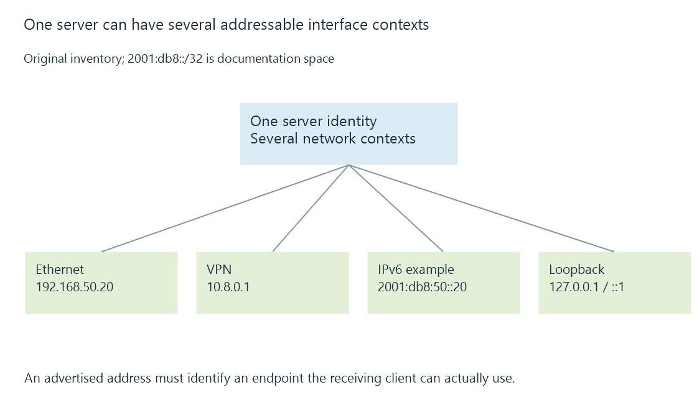

IP addresses and reachable interfaces
An IP address identifies an addressable interface or endpoint within a particular address family and scope, with routing and service selection determining whether Emby can be reached there.
An Emby server address tells the client where to send IP traffic. It is not a permanent device identity or a complete description of the service to request.
One machine can have several useful addresses, and only some of them may be reachable from a particular client.
A machine can expose several address contexts
Use this original inventory:
| Interface or context | Example address | Intended reach |
|---|---|---|
| Ethernet LAN | 192.168.50.20 | Its routed/local private realm |
| VPN interface | 10.8.0.1 | The configured tunnel realm |
| IPv6 interface | 2001:db8:50::20 | Documentation example of an IPv6 address |
| Loopback | 127.0.0.1 or ::1 | The requesting host’s own network stack |
The IPv6 value uses the documentation prefix; it is not a publicly reachable example server.

A client on the Ethernet LAN might use the first address. A VPN client needs the relevant routes. Another device’s loopback address refers to that other device.
The service adds another part of the endpoint
An address plus a transport protocol and port identifies the intended listener. A URL additionally names the application scheme and resource path.
Two services can share one IP address by listening on different ports. TCP and UDP can also use the same numeric port independently.
If a client reaches 192.168.50.20 but uses the wrong port, the address itself may be correct. Network ports explains the next part of the selection.
An address can outlive or change before a saved reference
A DHCP lease can change, an interface can disconnect, or an IPv6 prefix can be renumbered. A saved connection entry may still contain the earlier value.
The server’s identity can remain the same through that change. The old address can eventually belong to another machine.
A DHCP reservation stabilizes a selected allocation through the DHCP server’s binding policy. A hostname provides another indirection, whose records must also remain correct.
Listening and advertising are separate
A server can listen on an address or wildcard interface selection and report a particular address to clients. These observations need to agree with the route a client can use.
The wildcard 0.0.0.0 in a listener configuration means a binding choice, not a destination address to type into a remote app. IPv6 has its corresponding unspecified address.
Emby’s reported local-address setting addresses the advertisement side of that relationship. Changing an advertised address does not make an otherwise unreachable interface appear on the client’s network.
See Also
- IPv4 packet addressing and forwarding
- IPv6 addressing, scope and reachability
- Subnets, CIDR and matching routes
- Network ports, listeners and connection endpoints